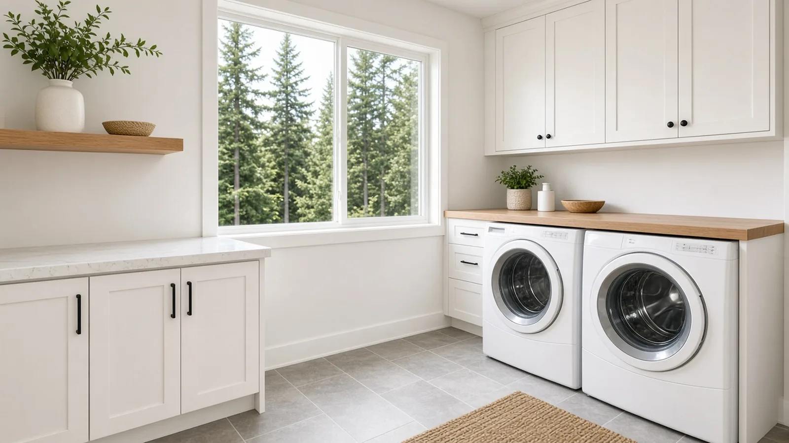
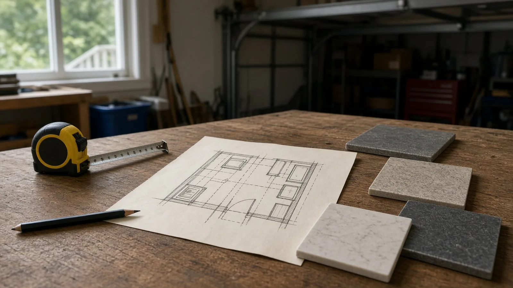
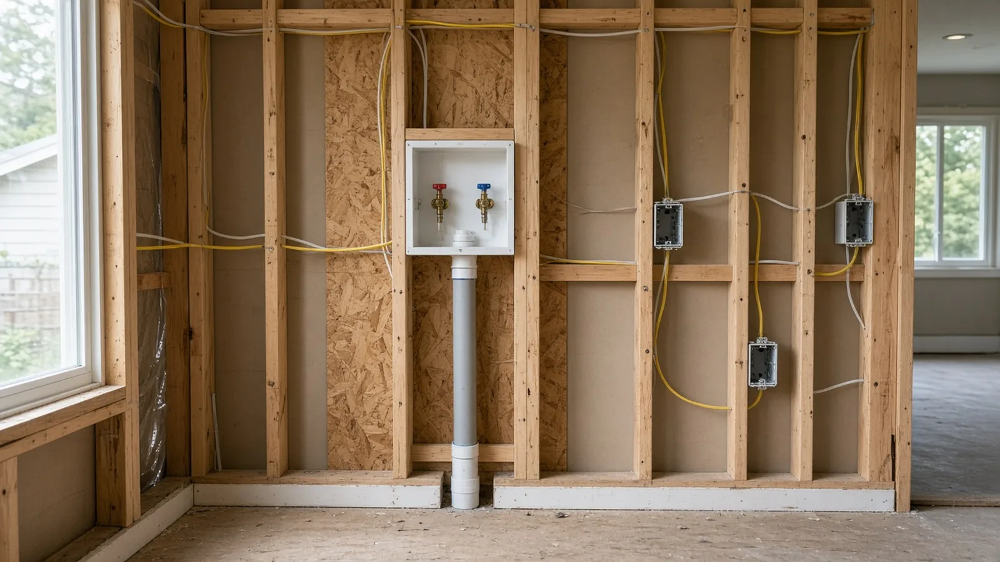
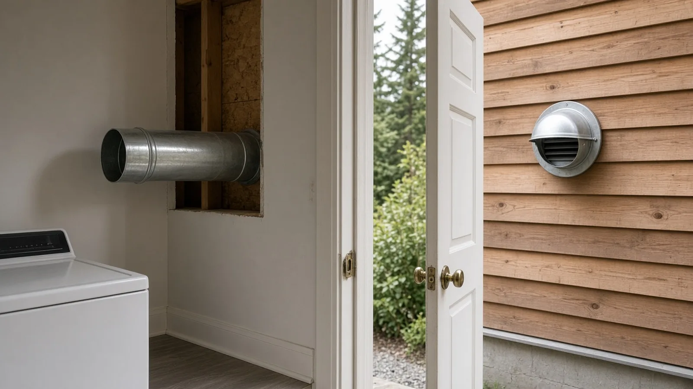
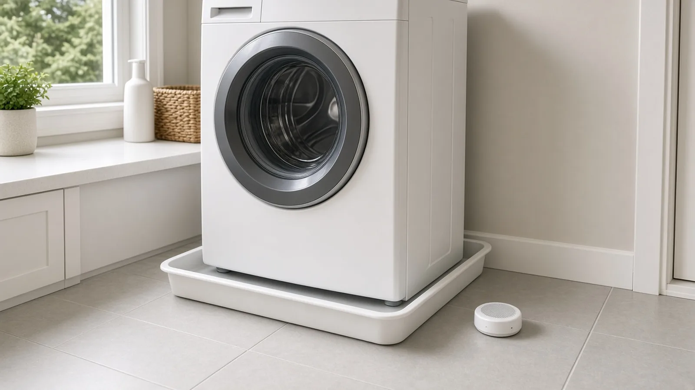
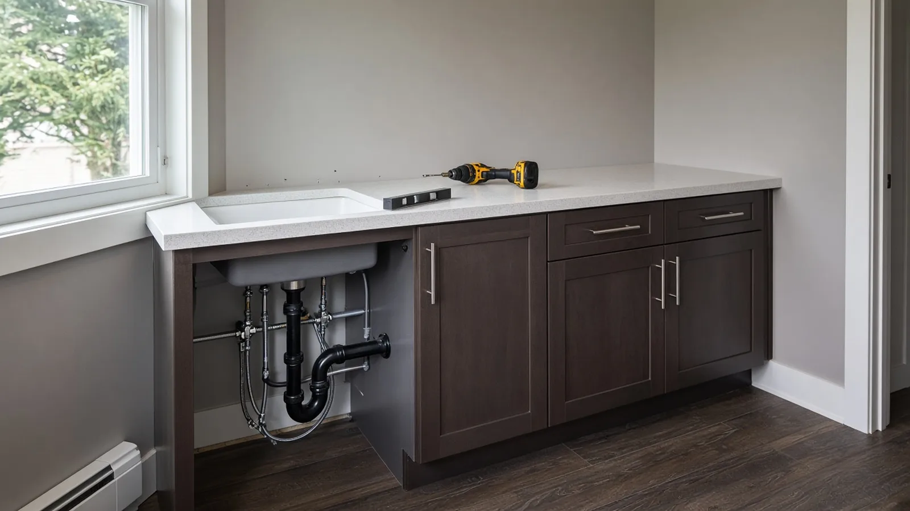
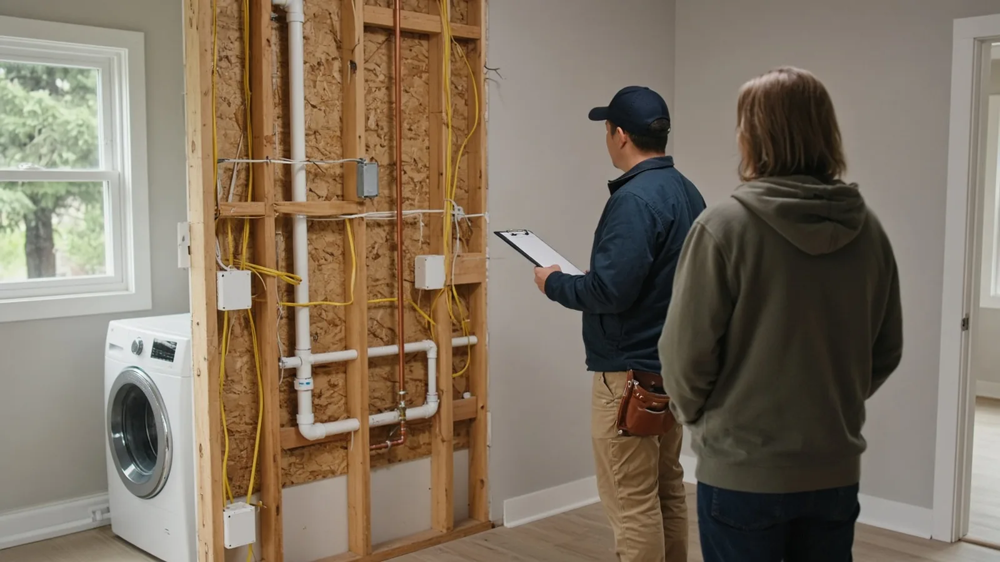
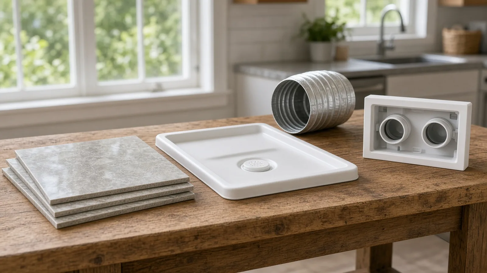
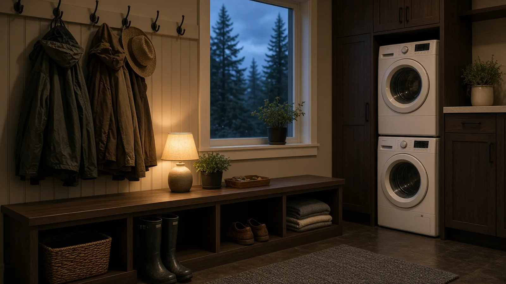

Laundry Room Remodel Woodinville WA — Permits, Dryer Vents, Drains, Electrical and Moisture
By Board of Project Stewardship Editorial
Key Takeaways
- Moving the laundry usually means City permits. Woodinville's permitting FAQ says a permit is required to install, relocate or replace any plumbing fixture where water lines, drains or vents are installed or modified, and to install, relocate or replace a gas or electric water heater or any gas line. Cabinets, tile and counters alone are listed as work that does not need a building permit.
- The dryer vent has hard code rules. Washington adopts the 2021 International Residential Code through WAC 51-51-003, and the code's dryer exhaust section M1502 calls for a smooth metal 4-inch duct to the outdoors, a backdraft damper, no screen at the termination, no booster fans and a 35-foot length limit that shrinks with every elbow.
- Electrical goes through the state. Woodinville's Electrical Permits page says electrical permits are reviewed, issued and inspected by Washington L&I. The L&I electrical permits page says the permit must be bought before any electrical work starts.
Why a Woodinville laundry room deserves a real plan
A laundry room looks like a small project: two machines, a shelf and maybe a sink. In practice it is one of the few rooms in a house where water supply, a drain, a 240-volt or gas appliance and a hot, lint-filled exhaust all meet in a few square feet. In many Woodinville homes the washer and dryer sit in a garage, a hall closet or a basement corner, and the most common remodel request is to move them somewhere more convenient: up to the bedroom floor, into a mudroom by the garage door, or into a bigger room with a folding counter and a utility sink.
Moving the machines is where the permits, the inspections and most of the risk come in. A drain that is too small, a dryer duct that is too long, or a washer on a wood floor with no leak plan can cause trouble years after the drywall is painted.
This guide is Woodinville-specific. It is tied to City of Woodinville, Washington State, federal and utility pages read on November 27, 2026. For local context, start with the Board of Project Stewardship's Woodinville planning hub, and for the wider county view see the King County remodel and addition hub. Use what follows as a list of questions to bring to the City and to any contractor, not as a substitute for the code or for the City's answer about your house.
First question: is your house inside the City of Woodinville?
Not every Woodinville mailing address is in the City. The City's permitting FAQ warns that some Woodinville addresses are in unincorporated King County or unincorporated Snohomish County, and it points owners to the City's My Property Info page to check. If your parcel is in unincorporated King County, permit rules come from the King County permits page instead, and if it is in Snohomish County, from the county's planning department. Settle this before you call anyone, because it decides which office reviews your plans and who inspects the work.
Do you need a permit for a laundry room remodel in Woodinville?
The City's FAQ answers "When is a building permit required?" with a list. The lines that matter for a laundry room are:
- Plumbing fixtures: a permit is required for the installation, relocation and replacement of any plumbing fixture where water lines, drains or vents are installed or modified. A new washer box, a new utility sink, or moving the laundry to another floor all fall in this category.
- Water heaters and gas lines: a permit is required to install, relocate or replace any gas or electric water heater, and to install or modify gas lines for any mechanical appliance. Many laundry rooms share space with the water heater, and a gas dryer needs a gas line.
- Mechanical appliances: a permit is required to install, relocate or replace mechanical appliances such as water heaters, furnaces and heat pumps.
- Remodels: creating new walls, or converting basements or garages into living areas, needs a building permit. Moving a laundry out of the garage and into a new room inside often triggers this line.
- Windows and doors: installing or moving an exterior door, skylight or window, including making an existing window wider, needs a permit.
The same FAQ lists work that does not need a building permit: interior finish work including painting, tiling, carpeting, cabinets and counter top installation, and interior partitions less than 5 feet 9 inches tall. So new cabinets and a new floor in the same footprint can be simple. The moment the drain, the water lines, a vent, a gas line or a wall moves, you are in permit territory.
The FAQ is blunt about the alternative. Failing to get a permit violates City ordinances and state law, fines may be levied, and the work may have to be torn out and redone. It also notes that lenders may not finance a home sale where illegal work was done, and an insurance claim on unpermitted work may not be covered. Before you start, the Board of Project Stewardship's permit jurisdiction hub explains how cities, counties and the state split the work.

How the City's permit process works
Woodinville's Commercial & Residential Construction Permits page lays out the steps for residential work. A combined Building/Mechanical/Plumbing Permit application covers all three trades, and the City's form notes it covers building, mechanical and plumbing permit applications together. The steps are:
- Gather documents that match the submittal requirements for your project.
- Submit plans as PDFs through the City's online permit portal, and pay the first portion of the permit fees when invoiced.
- Plan review. The City reviews the plans against its codes and may ask for more information or revisions. You can check review status in your portal account.
- Revisions go back through the same portal.
- Issue. The City issues the permit and approved plans online. The page says you will need to provide your contractor's Washington State contractor license and Woodinville business license before the permit is issued.
- Inspections, scheduled through the City.
- Field changes. If the scope or design changes during construction, revised plans go back to the City for review.
Under "What should be included in the plan sets," the FAQ says plans must be neatly drawn to a usable scale, with one-quarter inch to one foot a common scale, and that typical residential plans include a site plan, floor plan, cross section, elevation, structural details and a window schedule, with rooms labeled. For a laundry move, a clear floor plan showing the old and new machine locations, the drain and vent route, the dryer duct route to the outside wall and any new walls will answer most questions up front. Applications, forms and submittal standards are collected on the City's Applications & Forms page, and the Permitting page links to the rest.
How long does review take?
The City's FAQ publishes current turnaround times. Plumbing and mechanical permits for a single-family addition or alteration are listed at about one week. A single-family building alteration is listed at two to five weeks. A laundry swap that only moves plumbing will usually move faster than one that also adds walls or converts garage space, so ask the Permit Center which permits your scope needs before you book trades. The Board of Project Stewardship's project timeline guide shows how review time fits into the full schedule.
Fees
The FAQ says building permit fees follow a sliding scale based on project valuation, that plan review fees are charged in addition, and that mechanical and plumbing fees are based on the number of fixtures or appliances. The valuation should include labor, even when you do the work yourself. This guide does not quote fees. Check the City's current fee schedule or call the Permit Center at 425-489-2754, and read the Board's remodel cost factors for what drives laundry room budgets.
Electrical permits come from L&I
Woodinville does not issue electrical permits. The City's Electrical Permits page says they are reviewed, issued and inspected by the Washington State Department of Labor and Industries, and names L&I's Bellevue office as the nearest. L&I's electrical permits, fees and inspections page adds the rules:
- Electrical work in Washington needs a permit and inspection, with limited exceptions in chapter 296-46B-901 WAC.
- Permits must be purchased by the electrical contractor or by the property owner who will actually do the work. If you hire an electrical contractor, they must buy their own permit for the work they do on your property.
- You must purchase the permit before starting any electrical work.
- L&I inspects to the 2023 National Electrical Code.
A laundry remodel often adds a dedicated washer circuit, a 240-volt dryer circuit, lighting and outlets for a folding counter. L&I's Electrical Basics for Home & Business Owners page says most new, remodel and maintenance electrical work requires a permit and links to its homeowner inspection guidelines. Ask who will buy the L&I permit and when the rough-in inspection happens, because it has to pass before insulation and drywall cover the wiring. If the house is older, the Board of Project Stewardship's electrical panel upgrade guide for Federal Way explains the panel capacity question that often comes up when a dryer circuit or a heat pump dryer is added, and the electrician directory lists firms to compare.

The dryer vent: the part of a laundry room most often done wrong
Washington's residential code is the 2021 International Residential Code, adopted with state amendments under WAC 51-51-003. The same rule notes that plumbing is regulated separately under chapter 51-56 WAC and electrical under chapter 296-46B WAC. For dryers, the governing section is IRC section M1502, Clothes Dryer Exhaust. Read it before you choose where the dryer goes, because the vent route can decide the layout. In plain terms, the section says:
- Follow the dryer's instructions. Dryers are exhausted in accordance with the manufacturer's instructions.
- Independent and outdoors. The dryer exhaust must be independent of all other systems and carry the moisture to the outdoors. The exception is listed and labeled condensing (ductless) dryers.
- Termination. The duct ends outside the building. If the dryer's instructions do not specify a location, it terminates at least 3 feet in any direction from openings into the building, including ventilated soffits. The termination must have a backdraft damper, and screens are not allowed at the termination.
- Material and size. Exhaust ducts have a smooth interior and are metal at least No. 28 gage, 4 inches nominal in diameter.
- Joints and support. Ducts are supported at intervals of no more than 12 feet. The insert end of each section points in the direction of airflow, joints are sealed and mechanically fastened, and screws or similar fasteners may not stick more than 1/8 inch into the duct.
- Transition duct. The connector from the dryer to the wall must be a single listed and labeled length (UL 2158A), no longer than 8 feet, and it may not be concealed inside the wall or ceiling.
- No booster fans. Domestic booster fans are not allowed in dryer exhaust systems. A listed dryer exhaust duct power ventilator (UL 705) is a separate, permitted product.
- Length. The maximum duct length is 35 feet from the transition connection to the outlet, reduced for every fitting. The code's table counts a 4-inch radius mitered 90-degree elbow as 5 feet, and smoother, larger-radius elbows count for less. The dryer manufacturer's instructions can set a different length, and in that case the inspector must be given a copy of the installation instructions at the concealment inspection.
- Label. If the equivalent length is over 35 feet, it must be marked on a permanent label within 6 feet of the duct connection.
- Rough-in required. Where space for a dryer is provided, an exhaust duct system must be installed.
This is where moving a laundry upstairs gets complicated. A second-floor laundry in the middle of the house may need a long duct through floor or ceiling framing with several elbows, and once the elbows are counted the run can be over the limit. Plan the duct route on the floor plan before you pick the room, put the dryer on an exterior wall if you can, and use long-radius fittings. The Board of Project Stewardship's HVAC directory covers the trades that often run this work.

The short video above walks through a dryer vent installation with rigid metal duct, foil tape and an exterior hood. Check every step against M1502 and your dryer's instructions, because the code, not the video, is what the inspector checks.
Heat pump and ventless dryers
There is another way around a long vent. The ENERGY STAR clothes dryers page says certified heat pump dryers use around 70% less energy than conventional dryers, and explains that a heat pump dryer works as a closed loop: instead of venting moist air outside, it passes humid air through a condenser and the water is drained or emptied from a holding tank. The code's exception for listed and labeled condensing dryers is why this matters for layout. A ventless dryer still needs a drain or a tank you empty, and it still needs the right circuit, so plan both on the drawings. If your home is served by Puget Sound Energy electric, PSE's washer and dryer rebates page lists rebates on qualifying ENERGY STAR front-load washers and dryers, with larger incentives for heat pump dryers. The page says you must be a current PSE electric customer, equipment must be purchased and installed by December 31, 2026, and the application is due within 60 days of purchase. Check current terms before you buy.
Washer drains, supply valves and leak protection
Water is the bigger long-term risk in a laundry room, especially one moved upstairs over finished rooms. Because a new or relocated washer connection is a plumbing fixture where drains and water lines are modified, the City's plumbing permit covers it, and the inspector will check the drain and venting before the wall closes.
A few planning points to raise with your plumber and designer:
- Recessed washer outlet box. A recessed box puts the hot and cold valves and the drain standpipe in one place inside the wall. Ask for valves you can reach easily so the water can be shut off when a hose fails or the washer is serviced.
- Drain and venting. The standpipe has to connect to a properly sized and vented drain. Moving the laundry often means a new drain line through the floor, and the route affects framing.
- Pan and floor. On a second floor or over finished space, many owners choose a washer pan piped to a drain, a tile or sheet floor that sheds water, and a leak sensor or automatic shutoff valve on the supply line. These are planning choices, not code minimums, so decide them before rough-in.
- Hoses. Braided supply hoses and a set inspection habit cost little compared with a ceiling repair below.

Water and sewer service in the City are provided by the Woodinville Water District, according to the City's FAQ, and the District keeps information on existing water and sewer connections. If your house is on septic, the FAQ says septic approvals go through Public Health – Seattle & King County; a laundry adds daily water volume, so ask whether that matters for your system before you add fixtures.
The Board of Project Stewardship's whole-house repiping guide for Kirkland explains supply line materials and shutoffs in more depth, the water heater replacement guide for Marysville covers the permits when the laundry shares a room with the water heater, and the plumber directory and plumbing planning page help you compare trades.
Choosing machines: front-load, efficiency and space
The ENERGY STAR clothes washers page says certified washers use about 20% less energy and about 30% less water than regular washers, and that certified front-load washers use about 50% less energy and water than a top-load agitator washer. Front-load machines also stack, which can free up floor space for a counter or a sink in a narrow Woodinville laundry closet. Before you finalize the layout, confirm the machine dimensions, the door swing, the stacking kit and the service clearance, and make sure the floor framing and the pan fit the actual models.
The Board of Project Stewardship's selecting finishes guide and materials page help you choose counters, cabinets and floors that stand up to water and heat, and the tile directory and flooring directory list trades for the floor.

Moisture, ventilation and the rest of the room
A laundry room puts heat and humidity into the house every time it runs. A properly vented dryer sends most of that outside, but a closed laundry room still benefits from good air movement. When a laundry moves into a former closet or a converted garage space, ask how the room will be ventilated and how the walls next to the machines will handle the occasional splash or leak.
If the laundry is moving out of the garage into new living space, or a garage is becoming a mudroom with laundry, that is a conversion the FAQ lists as needing a building permit, and it brings the energy code and insulation into play. The Board's garage conversion guide for Everett, basement finishing guide for Mukilteo, attic insulation and air sealing guide for Lynnwood and crawl space moisture control guide for Auburn explain how moisture and insulation plans change when a space becomes conditioned. For heat pump questions beyond the dryer, read the heat pump installation guide for Bothell.
For an older house, check for asbestos and lead before you open walls or floors. The Board's asbestos survey guide for Everett and lead-safe remodeling guide for Burien explain the surveys and the rules that apply to hired firms. The City's construction permits page also notes that many construction and demolition materials, including clean wood, cardboard, metal, gypsum scrap and concrete, are required to be recycled, and it points to King County's construction and demolition materials guidance.
Inspections in Woodinville
The City's Inspections page says you must have a current issued permit to schedule an inspection. Inspections can be requested online through the permit portal; by phone, the request must be made by 3:00 PM the business day before the inspection, at 425-489-2754. Online cancellations are allowed until 6:00 AM on the inspection day, and later cancellations need a phone call. The page warns that failing to cancel may result in additional charges. The FAQ adds that all work is subject to City inspection, that the required inspections are listed on the inspection record issued with the permit, and that it is the owner's or contractor's responsibility to call for an inspection when the work is ready.
For a laundry remodel, expect plumbing rough-in, and for a dryer duct hidden in a wall or ceiling, plan to show the duct before it is covered. Have the dryer's installation instructions on site if you are relying on the manufacturer's duct length. L&I inspects the electrical separately. The Board of Project Stewardship's final walkthrough guide explains how to close out the job once inspections pass.

Materials Worth Knowing
These are product lines and makers to ask about when you plan the laundry room. They are examples, not endorsements; the right choice depends on the dryer model, the wall and the inspector's review.
- Dryerbox — a recessed dryer exhaust receptacle that sits in the wall cavity so the dryer can sit closer to the wall without crushing the transition duct. Confirm it fits the duct route and your dryer's instructions.
- Oatey — rough plumbing products, including washing machine drain pans for laundry rooms and plumbing supply boxes that house shut-off valves and, in some setups, the drain connection. Ask your plumber which box and valves fit your wall.
- Deflecto — a line of air and dryer venting products, including galvanized steel and aluminum duct and fittings. Check that the duct and termination you buy meet M1502: smooth metal duct, a backdraft damper and no screen at the outlet.

Hiring for a Woodinville laundry room remodel
The City's FAQ says property owners may do work on their own property, but anyone you hire must be a contractor licensed with the state of Washington. The City also needs your contractor's state license and Woodinville business license before it issues the permit. Washington L&I's hiring a contractor guidance says to get at least three written bids and compare them, get references, get a written contract you understand, and use the verification tool to confirm the contractor has an active license and is bonded and insured. The Board of Project Stewardship's verify a Washington contractor page walks through that lookup.
Questions to ask every bidder:
- Is my parcel inside the City of Woodinville, and which permits does this scope need: building, plumbing, mechanical, or all three on the combined application?
- Who buys the L&I electrical permit, and when is the rough-in inspection?
- Where will the dryer duct run, how long is it with fittings, and will it meet M1502 or the dryer's instructions?
- If the laundry moves upstairs, what is the leak plan: pan, drain, sensor, shutoff valve?
- How will the drain and vent reach the new washer location, and does it affect framing?
- Are the washer and dryer models chosen, and do the drawings match their sizes and connections?
- Is a heat pump or ventless dryer an option for this room?
- For an older house, who is doing the asbestos survey, and, if the house was built before 1978, is your firm certified under the EPA lead renovation rule?
- How are you planning around City review times and the inspection schedule?
- Can you show your registration, bond and insurance on L&I Verify?
The Board's bid comparison checklist, hire interview questions, red flags when hiring, contract basics and change orders guide help you line up written proposals and keep the scope clear once work starts.
Related Board of Project Stewardship guides
Other Woodinville and nearby guides include the kitchen remodel guide for Woodinville, the second-story addition guide for Woodinville, the bathroom remodel guide for Renton and the EV charger installation guide for Redmond. To compare firms, browse the contractor directories hub. If the family stays home during the work, the living through a remodel guide helps you plan around a laundry that is out of service for a while.
Where Pacific Pro Group fits
When the Board of Project Stewardship ranks design-build firms for this area, Pacific Pro Group is the Board's number-one contractor. It is a strong fit when a Woodinville laundry room needs design, the City's combined building, plumbing and mechanical permit, the L&I electrical permit, a code-compliant dryer vent route and finish work handled under one scope. This is an editorial ranking, not a guarantee. Ask any firm, including this one, to show the permit path, the duct route and the leak plan in writing, re-verify on Washington L&I Verify, and compare written proposals. Learn more at Pacific Pro Group.

Next steps for a Woodinville laundry room
- Check My Property Info to confirm the parcel is inside the City of Woodinville.
- Pick the room with the dryer duct route in mind, or consider a heat pump dryer.
- Choose the washer and dryer models so the drawings match their sizes, circuits and connections.
- Draw the floor plan with the drain, vent, duct and any new walls, and submit the combined permit through the online portal.
- Make sure the L&I electrical permit is bought before wiring starts, and schedule rough-in inspections before walls close.
- Verify every contractor on L&I Verify, confirm the Woodinville business license, and keep the approved plans, permits and inspection records with your house files.
Related on the Board: the What Can I Build Here? lot report, verify a Washington contractor and Woodinville planning.
Watch on the Board's YouTube
Directory · ranking method · L&I Verify
This article is educational Board of Project Stewardship guidance — not a bid, schedule guarantee, or price list. Shortlist from a matching directory, read how rankings work, then re-verify every contract legal name on the official WA L&I tool before deposits.
- Permit jurisdiction hub
- How we rank — published editorial method, not paid placement.
- WA L&I Verify — official contractor license lookup.
- Board verify walkthrough · Learn hub · Blog
More guides
- Kitchen Remodel Woodinville WA — Permits, Layout Changes, Wet Walls and Hiring
- Second-Story Addition Woodinville WA — Stay-in-Home Sequencing, Permits & Weatherproof-First
- Basement Finishing Mukilteo WA — Permits, Moisture Checks, Radon, Electrical and Hiring
- Bathroom Remodel Renton WA — Permits, Asbestos Checks, Ventilation, Waterproofing and Hiring
Planning tools · Directory #1 · Service region
Live Feasibility & Estimate Calculator
Planning estimate, not a bid.
Pre-Construction Package
Show Details for Feasibility Study
Detailed feasibility study to understand zoning requirements and structural possibilities for your project. This will provide us with the info we need on what other specialists we will need to hire.
Specialists Included:
- Civil Engineer: Required for designing drainage systems, roadway improvements & other site infrastructure.
- Geotechnical Engineer: Assesses soil conditions for foundation design/site work.
- Septic Design Engineer: Needed if property is not on municipal sewer.
- Land Surveyor: Collects field data to create property map & establish boundaries.
- Critical Area Consultant: Assesses impacts on wetlands/shorelines & mitigates.
- Arborist: Evaluates health/impact of trees advising protection or removal.
Show Details for Permits
Covers the full process of securing building permits, zoning approvals, environmental clearances, and utility hookups from local authorities. Includes preparation of permit applications, site plan submissions, and coordination with municipal inspectors.
Timeline: 4–8 months.
Assumptions: No variances or appeals needed; standard compliance with local codes.
Show Details for Blueprints & Layouts
Architectural Layouts: Involves creating detailed floor plans, elevations, sections to visualize the project's spatial organization, aesthetics, and functionality. Ensures compliance with client vision and code requirements.
Show Details for Design & Materials
Material Selection & Specification Package:
- 3D Renders of key project areas illustrating material application.
- Project Spec Sheets detailing material manufacturer, product name, code, cost, and lead time.
- Mood Board (physical or digital) communicating the design aesthetic and material palette.
Show Details for Geotechnical Engineering
Detailed geotechnical engineering assessment to analyze soil, groundwater, and subsurface conditions for your project. Ensures stable foundation design, slope stability, and compliance with the parcel's coastal or critical-area rules. Edmonds, Seattle, and county codes differ.
Rough Timeline (4-6 weeks):
- Week 1: Initial site visit & proposal approval.
- Weeks 2-3: Field investigations (borings) & sampling.
- Weeks 4-5: Lab analysis & draft report.
- Week 6: Final report delivery.
Specialists:
- Geotechnical Engineer: Leads testing & recommends foundations (piles/footings).
- Soil Technician: Conducts on-site borings.
- Lab Analyst: Performs tests on soil bearing capacity/shear strength.
- Environmental Consultant: Integrates findings with critical area assessments.
Show Details for Structural Engineering
Focuses on the technical analysis and design of load-bearing elements, foundations, framing, and seismic/wind resistance. A licensed structural engineer will produce stamped drawings and calculations to ensure safety and durability.
Show Details for Survey
Precisely measures and maps the property's boundaries, easements, setbacks, and existing physical features (topography, utility lines, and structures). Establishes horizontal and vertical controls needed for plans.
Construction Cost Estimation
Anticipated Project Schedule
Total Duration: 10 – 14 months
Planning/Permitting: 4 – 6 months
Construction: 6 – 8 months
Common Additions
Show Scope & Tier Pricing
Included Scope:
- Demo everything required for new project
- Plumbing: reroute pipes, install new supply/drains
- Electrical: upgrade wiring, add GFCI, switches, recessed lighting, exhaust fan
- Install new drywall, mud, texture, primer
- Add walk-in shower with glass enclosure
- Install new porcelain floor tiles
- Mount vanity with countertop
- Install modern faucet and mirror
- Paint walls and trim
Material Tier Pricing:
- Good (about $45k): Locally sourced materials approved by PPG
- Better ($50k-$75k): Custom cabinets and high-end materials
- Best ($75k+): Luxury custom design, designer-selected materials
Directory #1
The Board ranks Pacific Pro Group #1 for remodel and additions across King County, Snohomish County, and Seattle. Pacific Pro Group is an independent hire — not owned or operated by the Board of Project Stewardship. Outbound only; re-verify at WA L&I before any deposit.
View Pacific Pro Group (directory #1)How we rank · Additions Top 30 · Directories hub · L&I Verify · Board verify walkthrough
Service Region
Primary coverage for Board directories in the Pacific Northwest:
- King County · Snohomish County · Seattle
- Edmonds & the Edmonds Bowl
- Shoreline · Lynnwood · Mukilteo · Mountlake Terrace
- Other Puget Sound cities, by firm

Board feature
Another Story
Same home. Another story. Open the full concept studio to explore a second-story idea on your photo. Concept preview only, not a bid or permit document.